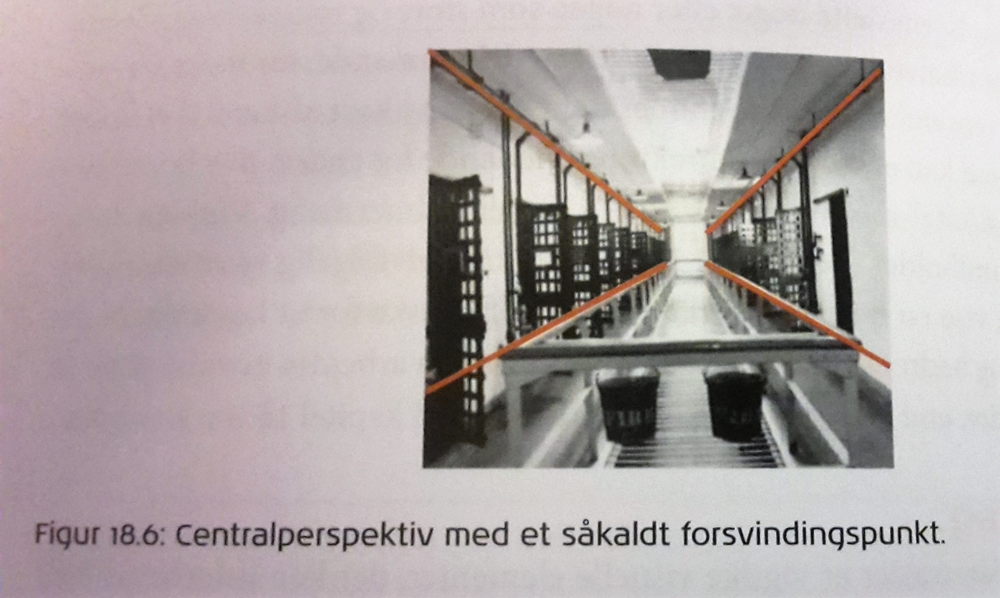

Visuel Kommunikation
Visuel kommunikation
Semiotik
Semiotik er læren om tegn og studiet af, hvordan betydning skabes, overføres, modtages og fortolkes ved hjælp af disse tegn. Mennesket skaber mening med de tegn det opfatter og skaber. Semiotik kan bruges til analyser af ord, billeder, handlinger m.v. og bruges af bestemte tegn skal ikke undervurderes.
Tegnet opfattes som flertydigt, for dets betydning ændres alt efter hvilken sammenhæng det indgår i.
Det er ikke kun billeder, lyd og tekst der fungerer som tegn. Det kan også have stor betydning hvilken typografi der bruges:
• Mikrotypografi. Selve skrifttypen/fonten og dens kendetegn: Skrifttypens stil har betydning; er der brugt sans-serif? Er det en konventionel eller eksperimenterende skrifttype? Altså hvilket udtryk søger skrifttypen at skabe.
• Mesotypografi (mesodesign). Den aktive luft eller et grid: Det der tit ikke kan ses ved første øjekast, er det mest dynamiske. Er det typografiske billede meget luftigt eller komprimeret?
• Makrotypografi (makrodesign). De grafiske dele arrangeret i et layout: Helhedens komposition; hvordan er samspillet mellem typografi, grafik og billeder, og hvilken overordnet genre er layoutet?
Film
Generelle kommunikationsstrategier for film:
- Karakter, konflikt og livsstil: et typisk træk for film er, at man kan identificere sig med en persons konflikt eller livsstil
- Effekter og stilart: det er essentielt at vide hvordan filmen bedst kan udtrykke sit budskab og det kan give god mening at finde inspiration fra kunsthistoriens -ismer (figur 18.1)
- Kropssprog: kropssprogets kommunikative tendenser (figur 18.2)
- Lyd og musik: stemningen i en film kan skildres via musik, lyd og stemmer, hvilken kan styre hvordan modtageren opfatter det der ses
- Handling: for at få et godt overblik over effekter og måden de bidrager til fortællingen, er ved hjælp af et visuelt storyboard; en slags kort tegneserie der, ved hjælp af rough sketching, viser hvordan enkelte scener skal filmes og redigeres. Der anvendes pile og symboler til at forklare de forskellige effekter
- Kameravinkel (perspektiv): der skal overvejes nøje hvordan billedet fremhæves; forskellige perspektiver giver forskelligt indblik i stemning og det er derfor vigtigt at hensigten bag er valgt med stor bevidsthed (figur 18.5)
- Motiv: uanset om det er film eller stillbillede, skal motivet vurderes; understøtter motivet budskabet og er det relevant at bruge i forhold til målgruppen
- Farveholdning: farver, former og kontraster er alle vigtige visuelle elementer, der kan kommunikere helt særligt til målgruppen. Det er vigtigt at have i mente at farver kan have en hel subjektiv betydning for den enkelte, eller noget specifikt i en bestemt kulturel sammenhæng
Stillbillede
Stillbilledets komposition
Det er vigtigt at tænke over hvordan et stillbillede iscenesættes;
billedet skal først og fremmest tages/beskæres med en bestemt komposition i tankerne;


”Det siges at venstre side i et billedes motiv kan bære mere med hensyn til størrelsen af elementer, uden at motivet tynges optisk”
(Kommunikation i Multimediedesign s. 260)

”Det gyldne snit er en klassisk komposition med rødder tilbage til antikkens æstetik. Kort fortalt går det gyldne snit ud på at komponere motivet, så det mindste stykke af en linje forholder sig til den største, som den største linje forholder sig til den mindste”
(Kommunikation i Multimediedesign s. 261)

”Rule of thirds er en komposition, hvor du deler motivet op i tre dele og derefter placerer et hovedmotiv i et af skæringspunkterne. Det er en forenkling af det gyldne snit”
(Kommunikation i Multimediedesign s. 261)
(Kommunikation i Multimediedesign kap. 18 s.260-261)